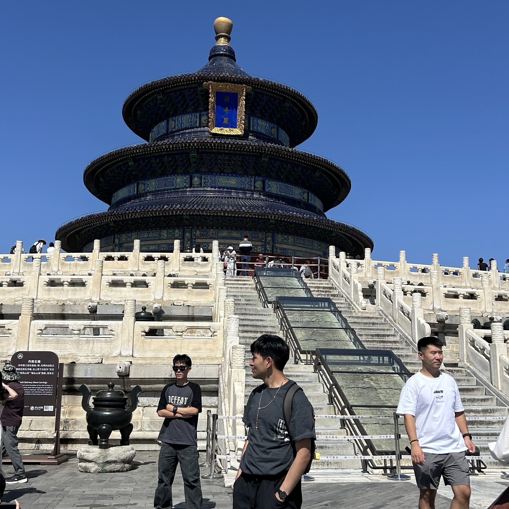

Transforming complex data into clear, measurable financial improvements.
Leading AI projects from conception to production deployment with measurable impact.
Aligning specialized departments on project milestones and long-term delivery.
Communicating across cultures for seamless collaboration and product development.
Trusted experience from
I am a Master’s researcher at Beijing Normal University
Business School and a former AWS Software Engineer.
At Amazon, I led AI and Data Science
initiatives in fraud detection and
consumer behavior, where I discovered my true edge:
bridging the gap between technical engineering and business strategy.
I am currently looking for Product-related positions
in the technology or finance sectors.
Master in World Economics
Sep 2025 - Jun 2027B.Sc. in Data Science
Sep 2019 - May 2023B.Sc. in Interdisciplinary Studies
Sep 2019 - May 2023Software Development Engineer
Seattle, USA | Jul 2023 - Sep 2025Data Science Research Assistant
Kunshan, PRC | Sep 2022 - May 2023Research Assistant
Durham, NC, USA | Jun 2021 - Aug 2022Selected examples of how I identify business problems, drive cross-functional execution, and deliver measurable outcomes.
AWS had a systemic billing discrepancy pattern across large-scale usage datasets with no systematic monitoring, leading to significant revenue leakage.
Led data analysis and remediation. Owned quantitative validation and cross-functional coordination with Finance and Engineering teams.
Recovered ~$500K in billing discrepancies and established ongoing monitoring practices to prevent future leakage.
Cloud capacity was either over-provisioned (wasting CapEx) or under-provisioned (risking outages). Annual waste was estimated in the millions with no data-driven planning.
Built and validated forecasting models. Owned the feature engineering pipeline and back-testing methodology before production deployment.
Reduced annual CapEx by ~$1.5M through optimized capacity planning, with models maintaining high accuracy in production.
AWS Lambda Managed Instances was a major product launch requiring coordination across multiple service teams with complex infrastructure dependencies.
Owned a critical piece of the core infrastructure. Served as the subject matter expert (SME) for my domain across collaborating teams.
Successful launch of a major AWS feature. My best practices became organizational standards, reducing onboarding time for future cross-team projects.
2022 IEEE International Conference on Blockchain
View Publication ↗Neural Compression Workshop at ICML 2023
View Publication ↗Confucius Institute
Issued July 2026ETS
Issued June 2026Peking University, Coursera
Issued 2020IBM, Coursera
Issued 2020Awarded for academic excellence and research potential.
Built "Blinder Resume," an AI-driven hiring tool designed to eliminate unconscious bias.
Developed a mental health platform; outperformed 250+ teams to reach the China National Finals.
Recognized for maintaining a GPA within the top 10% of the cohort.
Four-year merit-based scholarship covering 100% of tuition expenses.
The person behind the product — how diverse experiences shape my approach to building and leading.
3+ years of competitive breakdancing taught me discipline, creativity under pressure, and performing in high-stakes environments.
Living across Asia and the Americas shaped my ability to navigate cultural differences — a skill I apply daily in cross-functional product teams.

Learning Mandarin to professional fluency (HSK 4) reflects my commitment to deep cultural immersion, not just surface-level adaptation.
Looking for PM opportunities in Tech & Finance.
WeChat: YUSEICARLOS